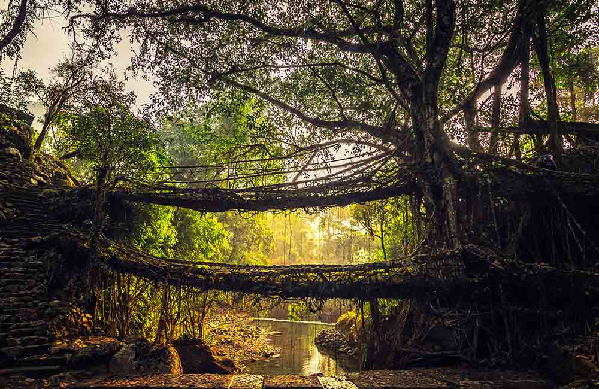
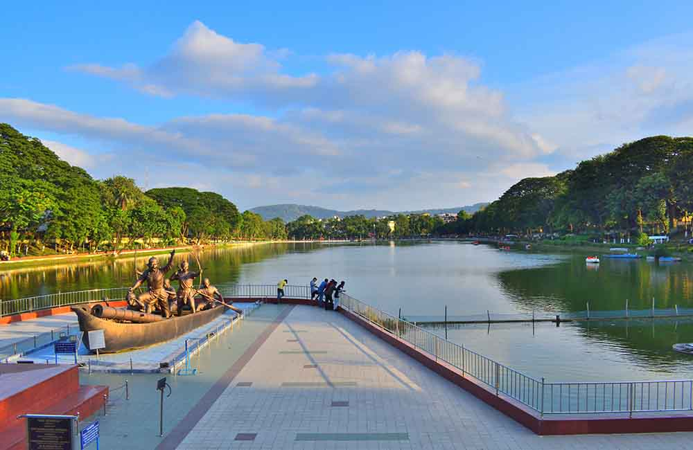
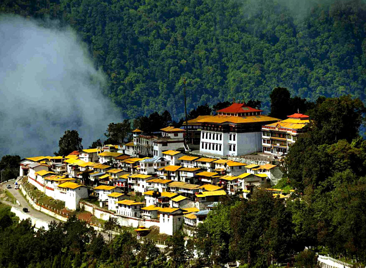

Famous places of NorthEast India
Kaziranga National Park

The Kaziranga National Park, a UNESCO World Heritage Site, with its dense forests, elephant-grass meadows, and swampy lagoons is home to the largest Indian rhinoceros population. The park is one of the best known biodiversity hotspots in India with four pre-defined tourist circuits. Each of these circuits has its own distinguishing feature. This 430 square kilometer national park is also the breeding ground for many other animals and birds.Kaziranga is a vast expanse of tall elephant grass, marshland, and dense tropical moist broadleaf forests, criss-crossed by four major rivers, including the Brahmaputra, and the park includes numerous small bodies of water. Kaziranga has been the theme of several books, songs, and documentaries. The park celebrated its centennial in 2005 after its establishment in 1905 as a reserve forest
Cherrapunji and Mawsynram

Rainfall can be beautiful! Located about 80 km apart, Cherrapunji and Mawsynram are the wettest places on earth. Both Cherrapunji and Mawsynram receive over 450 inches of rain every year and are blessed with panoramic vistas of scenic beauty. These hills offer a number of trekking routes too. No matter when you visit these family destinations in Northeast India, you’ll always be able to see and hear the beauty of raindrops falling from the sky.But Meghalaya, which literally means ‘abode of clouds in Sanskrit, and is home to over 17 rivers is a paradise waiting to be explored. The state is made up of three main regions – the Khasi, Jaintia, and the Garo Hills. These names are synonymous with the tribes that occupy the region.
The destinations for the monsoon traveler are the villages of Cherrapunjee, Mawlynnong, Mawsynram, and Dwaki. And to reach all these places one has to camp at the state’s capital, Shillong.
Gangtok

The cheerful city of Gangtok is one of the most popular hill stations in Northeast India. With mountains shrouded in mist and valleys covered with lush greenery, Gangtok beckons nature lovers, trekking enthusiasts, and photographers. A holiday here relaxes the body, mind, and spirit. Even if you’re not a mountaineering expert, a walk around the hills surrounding Gangtok can give you a clear view of the snow-capped Khangchendzonga Peak. Maybe, it’ll even inspire you to make mountaineering your new hobby
Guwahati

The entrance to the seven sisters of Northeast India, Guwahati balances natural beauty with the modern conveniences of a city. Guwahati is located on the banks of the River Brahmaputra and is the largest city in Assam. If you’re looking for a relaxed holiday, this is the place to be. The city also has an eclectic nightlife. Guwahati celebrates a number of festivals and being a part of these celebrations is a truly unique experience
Twang Arunachal Pradesh

What makes Tawang one of the best places to visit in North East India is its resemblance to heaven if you know what heaven looks like. Arunachal Pradesh’s smallest district is home to several attractions, including Tawang Monastery, Nuranang Waterfalls, Taktsang Gompa, Pankang Teng Tso Lake, and Jaswant Garh, among others.
The Tawang Monastery, situated at the height of 10,000ft and the residence of almost 450 monks, is one of the largest monasteries in India. In the evening, its beauty takes on a different appearance. Jaswant Garh War Memorial is built in honor of Jaswant Singh Rawat, an Indian rifleman of 4 Garhwal Rifles who bravely fought the Chinese army.